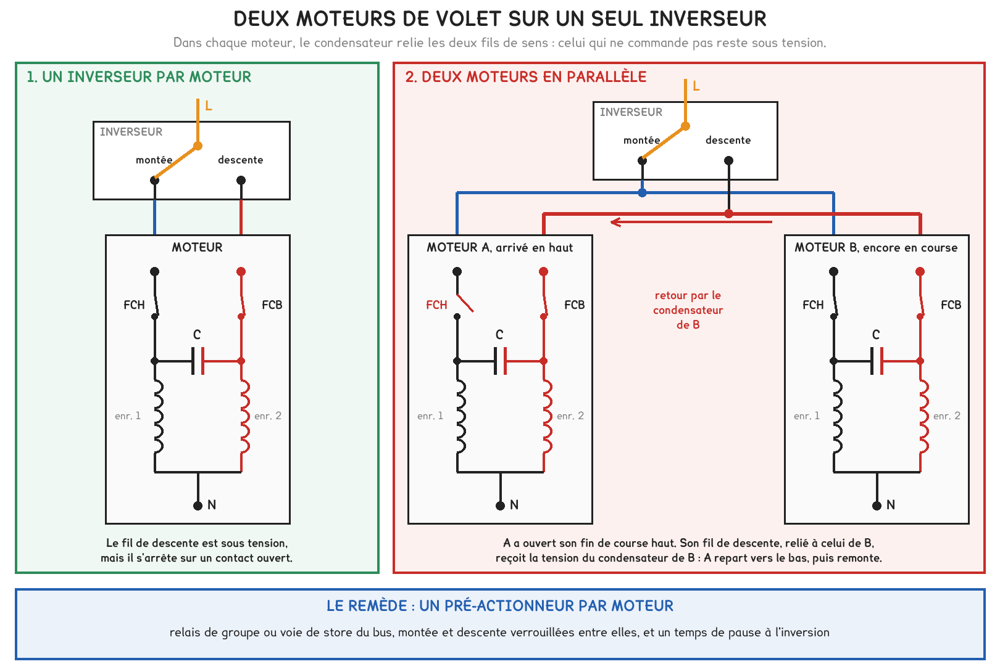
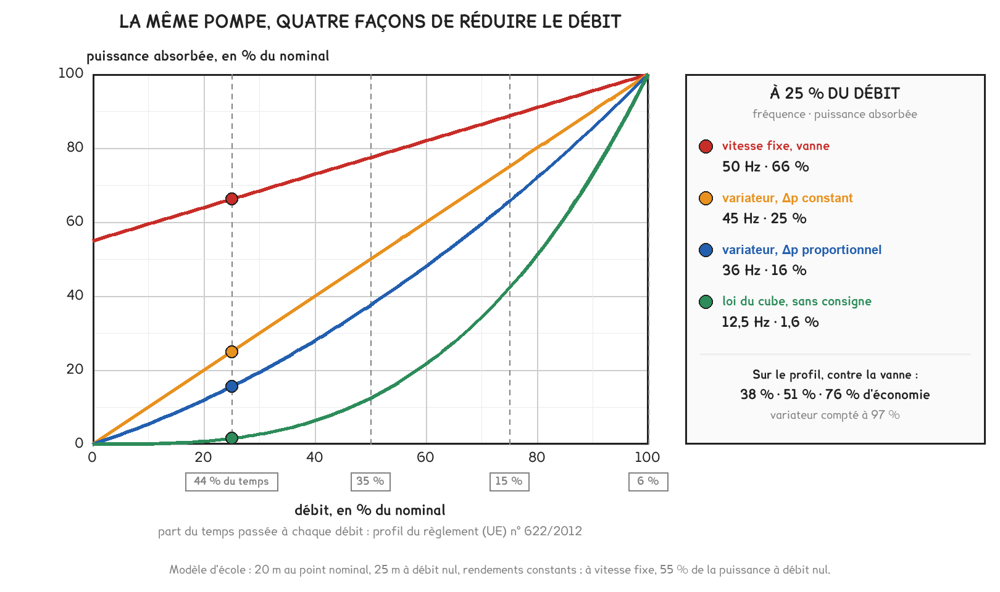

Document de formation du professeur — ne pas diffuser aux étudiants
Formation du professeur · BTS FED option C
Un règlement européen qui fixe le rendement des moteurs, une fiche d'économies d'énergie qui paie le variateur au forfait, une pompe égyptienne mesurée avant et après son variateur. Puis la tenue au vent que la norme exige d'un store, et trente-six brise-soleil commandés par un anémomètre dans un lycée de Moselle.
Savoirs travaillés
Un moteur asynchrone branché sur le réseau tourne à la vitesse que lui impose la fréquence : un peu moins de 1 500 tr/min pour quatre pôles, quel que soit le besoin du bâtiment. Or ce besoin varie sans cesse : le débit d’une pompe de chauffage suit la saison, celui d’une centrale de traitement d’air suit l’occupation, la position d’un store suit le soleil et le vent. Il n’existe que trois manières de combler l’écart : dissiper l’excédent dans une vanne ou un registre, changer la vitesse par un variateur, ou arrêter le moteur au bon moment, sur un fin de course ou sur une alarme de vent.
Les cinq cas retenus couvrent ces trois manières. Les deux premiers sont des textes : le règlement européen qui fixe le rendement minimal des moteurs, puis la fiche d’économies d’énergie qui rémunère un variateur au forfait. Le troisième est une mesure, celle d’une pompe suivie une journée avec sa vanne, puis une journée avec son variateur. Les deux derniers concernent les protections solaires : la tenue au vent que la norme exige d’un store, et trente-six brise-soleil commandés par un anémomètre.
| Cas | Ce qu’il oblige à savoir | Séance |
|---|---|---|
| Règlement (UE) 2019/1781, 2019 | glissement, plaque signalétique, classes IE, moteurs EC, démarrage | DOMA13 |
| Fiche CEE BAT-TH-112, 2026 | le variateur, la loi U/f, ses harmoniques, son paramétrage | DOMA13 |
| Station de pompage, Égypte, 2024 | vanne contre vitesse, couple quadratique, limite de la loi du cube | DOMA13 |
| NF EN 13659 et NF DTU 34.4, 2023 | classes de vent, pression dynamique, rafales | DOMB14 |
| Lycée d’Algrange, 2023 | moteur de store, fins de course, sécurité vent, scénario solaire | DOMB14 |
Le rendement d’un moteur se gagne en points, le débit inutile se perd en dizaines de pour cent, et un store mal protégé se détruit en une rafale. Les priorités du technicien suivent cet ordre de grandeur : la bonne vitesse d’abord, le bon moteur ensuite, et la sécurité vent avant tout confort.
Le règlement (UE) 2019/1781 de la Commission, du 1er octobre 2019, fixe les exigences d’écoconception des moteurs électriques et des variateurs de vitesse. Depuis le 1er juillet 2021, un moteur triphasé de 0,75 à 1 000 kW, à 2, 4, 6 ou 8 pôles, doit atteindre la classe IE3, un moteur de 0,12 à 0,75 kW la classe IE2, et les variateurs la classe IE2. Depuis le 1er juillet 2023, les moteurs de 75 à 200 kW à 2, 4 ou 6 pôles doivent atteindre IE4, hors moteurs-freins et moteurs pour atmosphères explosives. Le texte abroge le règlement (CE) n° 640/2009.
Selon la Commission européenne, 380 millions de moteurs relevant de ces règles étaient en service dans l’Union en 2020 ; ils ont absorbé 1 326 TWh, soit 53 % de l’électricité consommée. Les mesures d’écoconception en ont économisé 52 TWh cette année-là, et devraient en économiser 107 TWh par an en 2030.
Le règlement ne vise que les moteurs à induction, c’est-à-dire asynchrones, conçus pour tourner en continu et branchés directement sur le réseau. Trois familles du bâtiment lui échappent, chacune pour une raison que l’étudiant doit savoir donner : le moteur à commutation électronique, qui n’est pas asynchrone ; le moteur tubulaire de volet, prévu pour un service de courte durée ; le moteur compact, dont le variateur intégré ne peut pas être mesuré séparément.
Un moteur asynchrone tourne un peu moins vite que son champ. Le stator crée un champ tournant à la vitesse de synchronisme, 1 500 tr/min à 50 Hz pour quatre pôles ; le rotor ne reçoit de courant que par induction, donc seulement s’il glisse par rapport à ce champ. Le glissement vaut 0,67 % pour les moteurs de 132 kW du troisième cas, qui tournent à 1 490 tr/min, et plusieurs pour cent pour un petit moteur.
nₛ = 60 f / p · g = (nₛ − n) / nₛ · C = P / Ω
À 50 Hz : 3 000, 1 500, 1 000 et 750 tr/min pour 2, 4, 6 et 8 pôles.
Pour aller plus loin
Soit un moteur de 7,5 kW, 4 pôles, IE3, 230/400 V, cos φ 0,82, 1 460 tr/min, dont le rendement est pris au minimum IE3 du règlement, 90,4 %.
La puissance de la plaque est utile, sur l’arbre : le moteur absorbe 7 500 / 0,904 = 8 297 W. La double tension dit que chaque enroulement supporte 230 V : sur un réseau 3 × 400 V, on couple en étoile ; en triangle, chaque enroulement recevrait 400 V. Un démarrage étoile-triangle exige donc un moteur 400/690 V. Le courant vaut I = P / (η · √3 · U · cos φ) = 7 500 / (0,904 × 1,732 × 400 × 0,82) = 14,6 A ; très au-dessus, le moteur est surchargé, très au-dessous, il est surdimensionné et son cos φ se dégrade. La vitesse donne le glissement, (1 500 − 1 460) / 1 500 = 2,7 %, et le couple, 7 500 / (2π × 1 460 / 60) = 49 N·m.
Le champ transmet au rotor la puissance P_tr = C · Ωₛ ; le rotor la restitue sur l’arbre à sa propre vitesse, (1 − g) · P_tr. La différence, g · P_tr, chauffe les barres du rotor : le glissement mesure exactement les pertes rotoriques. Pour le moteur de 7,5 kW, 0,0267 × 49,05 × 157,08 = 205 W, le quart des 797 W de pertes qu’autorise la classe IE3.
Sur un petit moteur, le glissement dépasse souvent 5 %. Le règlement le montre sans le dire : à 0,12 kW, le rendement minimal IE2 n’est que de 59,1 %, et IE4 n’exige que 69,8 %. Le moteur EC porte des aimants au rotor : il tourne au synchronisme, sans courant rotorique, et une électronique commute les enroulements du stator selon la position du rotor. C’est pourquoi les circulateurs et les petits ventilateurs modernes sont à moteur EC.
Rotor immobile, le glissement vaut 1 et le courant atteint 5 à 8 fois le nominal ; à sept fois, environ 102 A pour le moteur de 7,5 kW. Le démarrage direct l’accepte jusqu’à quelques kilowatts, si la ligne et sa protection supportent la pointe. L’étoile-triangle alimente d’abord chaque enroulement sous 230 V : courant et couple sont divisés par trois, soit 34 A, ce qui convient à une charge qui démarre à faible couple, comme un ventilateur. Le démarreur progressif monte la tension sans changer la fréquence : il limite la pointe mais ne permet pas de tourner lentement. Le variateur démarre à fréquence faible, sous le courant nominal : la pointe disparaît, sans qu’on l’ait choisi pour cela.
La puissance de la plaque est une puissance utile. Le compteur voit la puissance absorbée, plus grande de 11 % pour un moteur IE3 de 7,5 kW et de 21 % pour un moteur de 0,75 kW. L’erreur inverse est aussi fréquente : additionner les puissances des plaques pour estimer une consommation, alors qu’un moteur surdimensionné n’absorbe que ce que sa charge lui demande.
En classe. En DOMA13, la plaque se lit avant toute formule : puissance vue par le compteur, couplage sur 400 V, glissement, couple. La question qui fait discuter vient ensuite : pourquoi le règlement ne s’applique-t-il ni au circulateur de chauffage ni au moteur du volet roulant, alors qu’ils sont les plus nombreux du bâtiment ? La réponse attendue nomme les deux critères du texte, le moteur à induction et le fonctionnement continu.
L’arrêté du 22 décembre 2014 définit les opérations standardisées d’économies d’énergie ; son annexe 3, consacrée au tertiaire, porte dans sa version en vigueur depuis le 30 avril 2026 la fiche BAT-TH-112, « Système de variation électronique de vitesse sur un moteur asynchrone ». Selon la version A22-2 de la fiche, telle que la reproduisent trois sites d’opérateurs du dispositif (sources commerciales), l’opération équipe d’un variateur un moteur asynchrone existant qui n’en a pas, ou un moteur neuf, de 3 MW au plus.
La durée de vie conventionnelle est de quinze ans. Le montant, en kWh cumac par kilowatt de puissance nominale, vaut 9 600 pour le chauffage et le pompage, 11 400 pour la ventilation, 3 900 pour la réfrigération, 990 pour la climatisation et les autres usages. Sont exclus les moteurs IE2 achetés de 2015 à 2016 entre 7,5 et 375 kW, puis à partir de 2017 entre 0,75 et 375 kW. La fiche équivalente de l’industrie porte le numéro IND-UT-102.
Le kWh cumac n’est pas un kWh économisé chaque année. L’arrêté du 29 décembre 2014 en fait la somme des économies annuelles sur la durée de vie, chaque année étant divisée par 1,04 par rapport à la précédente. Sur quinze ans, cette somme vaut 11,56 fois l’économie de la première année, et la fiche se lit alors à l’envers.
E_an = M / Σ 1,04⁻ᵏ (k de 0 à 14) = M / 11,56
Chauffage et pompage : 9 600 / 11,56 = 830 kWh/kW/an. Ventilation : 986 kWh/kW/an.
Lue ainsi, la fiche dit ce que l’État suppose : un variateur sur une pompe de chauffage économise chaque année l’équivalent de 830 heures à la puissance nominale, et sur un ventilateur 986 heures. Rapportés à une saison de chauffe de 5 500 heures, ou aux 3 000 heures d’occupation d’un bureau, ces forfaits valent 15 % et 33 % de la consommation à pleine puissance.
Un variateur change la fréquence, et la tension avec elle. La force électromotrice d’un enroulement vaut E = 4,44 · N · f · Φ : le flux reste constant tant que U / f l’est. Le variateur applique donc 400 V à 50 Hz et 200 V à 25 Hz, soit 8 V/Hz : c’est la loi U/f constante, qui garde le couple disponible. Pour une pompe ou un ventilateur, dont le couple décroît comme le carré de la vitesse, la loi quadratique réduit le flux à basse vitesse et économise le courant magnétisant. Au-delà de 50 Hz, la tension ne peut plus suivre, et le couple disponible baisse.
Pour aller plus loin
Trois étages. Un pont de six diodes redresse le 3 × 400 V ; le bus continu, filtré par des condensateurs, se tient entre 540 V, moyenne du pont (1,35 × 400), et 566 V, crête du réseau (√2 × 400) ; l’onduleur, six transistors IGBT, découpe cette tension en impulsions de largeur modulée, et l’inductance des enroulements lisse le courant en une sinusoïde. Le moteur reçoit des fronts de plusieurs centaines de volts établis en une fraction de microseconde.
Côté réseau, le pont ne prélève du courant qu’au voisinage de la crête. Ce courant ne contient que les rangs h = 6k ± 1 : 5, 7, 11, 13. Les rangs multiples de 3 sont absents d’un pont triphasé équilibré : un variateur triphasé ne charge pas le neutre, à la différence des alimentations monophasées du cours 1. Une self réduit fortement ces rangs.
Côté moteur, les fronts raides rayonnent et fuient vers la terre par la capacité du câble : câble blindé, blindage repris sur 360° aux deux bouts, longueur conforme à la notice. La séance DOMA7 traite la reprise de masse ; le variateur en est le cas d’école. Côté protection, le courant de fuite contient une composante continue : un variateur triphasé se protège par un différentiel de type B.
Le choix se fait sur le courant du moteur, pas sur sa puissance : un variateur annoncé pour 7,5 kW est calibré sur un moteur standard à quatre pôles, qu’un moteur ancien ou à deux pôles peut dépasser. Viennent ensuite la nature du couple, quadratique pour une pompe, constant pour un convoyeur ; l’indice de protection ; la catégorie CEM de la NF EN 61800-3, C1 en résidentiel, C2 en premier environnement installé par un professionnel, C3 en industrie ; la communication, Modbus ou BACnet vers la GTB, ou une entrée 0-10 V pour la consigne.
Le paramétrage minimal : données de plaque, loi U/f quadratique, fréquence minimale, souvent 20 à 25 Hz pour une pompe, fréquence maximale de 50 Hz sauf étude, rampes, fréquences à sauter en cas de vibration, source de la consigne. Si le variateur régule lui-même une pression, s’ajoutent la consigne et le correcteur PI, dont le réglage relève du cours 4 de fluides.
Un forfait d’économies d’énergie n’est pas une économie mesurée. Il rémunère une opération et non un résultat : un variateur laissé à 50 Hz reçoit le même montant qu’un variateur bien réglé, et il consomme davantage que l’alimentation directe, puisqu’il ajoute ses propres pertes.
En classe. En DOMA13, la fiche se lit comme un document de dossier : on donne la plaque d’un ventilateur de centrale, on demande le montant, puis l’économie annuelle qu’il suppose. La question suivante n’a pas de réponse dans la fiche : pourquoi le forfait de la ventilation dépasse-t-il celui du pompage, alors qu’une pompe de chauffage tourne plus d’heures ? Une réponse argumentée fait intervenir l’écart habituel entre le débit installé et le débit utile.
Selon l’étude de M. A. E. Salama, N. M. El-Naggar et S. Abu-Zaid, publiée dans Scientific Reports le 12 novembre 2024, une station de potabilisation d’un village du sud de l’Égypte, 200 litres par seconde pour environ 30 000 habitants, dispose de trois pompes identiques de 60 m de hauteur, entraînées par des moteurs asynchrones de 132 kW, 400 V, quatre pôles, 1 490 tr/min. Une pompe assure la base ; une seconde suit la demande pour tenir 4 bars au refoulement.
Un analyseur de puissance a suivi vingt-quatre heures le moteur de cette seconde pompe, d’abord réglée par étranglement de sa vanne, puis pilotée par un variateur qui régule les mêmes 4 bars : 2 466 kWh par jour avec la vanne, à puissance presque constante, et 1 521 kWh avec le variateur. La simulation des auteurs donnait 2,48 et 1,579 MWh ; leur conclusion retient une économie d’environ 30 %.
La mesure à la vanne contient toute la leçon : fermer une vanne réduit peu la puissance d’une pompe centrifuge. La pompe continue de tourner à sa vitesse nominale, sur sa propre courbe, et la vanne ajoute la perte de charge qui ramène le débit au besoin ; l’énergie inutile s’y dissipe en chaleur et en bruit. Le variateur, lui, cesse de fabriquer une pression inutile.
Les lois de similitude, démontrées au chapitre 3 du manuel de fluides, disent que le débit suit la vitesse, la hauteur son carré, la puissance son cube. Elles décrivent la pompe et non le réseau : à pression tenue constante, l’économie reste loin de ce que le cube laisserait croire, et la section « Là où la méthode change » en fait le calcul.
Pour aller plus loin
La puissance d’une pompe varie comme N³ et sa vitesse angulaire comme N : le couple résistant, C = P / Ω, varie comme N². À mi-vitesse, la pompe ne demande plus que le quart de son couple. Pour les moteurs du cas égyptien, le couple nominal vaut 132 000 / (2π × 1 490 / 60) = 846 N·m, et 541 N·m à 80 % de la vitesse.
Deux conséquences. Le flux peut être réduit à basse vitesse sans perte de couple utile : c’est la loi U/f quadratique. Et un moteur autoventilé, moins bien refroidi à basse vitesse, n’y chauffe pas, car ses pertes décroissent plus vite que sa ventilation, le courant actif suivant le couple. Sur un convoyeur à couple constant, il chauffe, et il faut une ventilation séparée.
Appliquer la loi du cube à une pompe qui régule une pression. « 80 % du débit, donc la moitié de la puissance » suppose un réseau sans consigne. Avec 4 bars à tenir, la pompe fournit toujours cette hauteur, et sa puissance décroît à peu près comme le débit. Annoncer la moitié d’économie sur un tel réseau, c’est promettre au client ce que la mesure ne donnera pas.
En classe. En DOMA13, on donne les deux relevés journaliers, la plaque et la consigne de 4 bars, sans l’article. Première question : quelle économie, en pourcentage et en kWh par an ? Seconde question, celle qui fait travailler : pourquoi n’est-elle pas plus forte ? L’étudiant qui désigne seul la consigne de pression a compris la différence entre une loi de pompe et le comportement d’une installation.
La norme NF EN 13659 fixe les performances des fermetures et des stores vénitiens extérieurs, et classe leur résistance au vent d’après un essai selon la NF EN 1932. Selon le cahier des charges type des bâtiments publics de Wallonie et le laboratoire Istituto Giordano, organisme notifié, les classes 1 à 6 correspondent à des pressions nominales de 50, 70, 100, 170, 270 et 400 Pa. Sous la pression nominale, le produit ne doit pas se déformer au point de mal fonctionner ; sous une pression de sécurité de 1,5 fois la nominale, arrondie, il ne doit pas devenir dangereux.
Selon la revue professionnelle Technicbaie (18 janvier 2023), le NF DTU 34.4 est alors en cours d’évolution sur la protection des stores automatisés contre les vents forts. Sa version en vigueur distingue déjà deux familles : une fermeture conforme à la NF EN 13659, choisie pour sa zone, peut rester exposée sans surveillance ; la classe de vent d’un store extérieur, relevant de la NF EN 13561, ne suffit pas à le laisser en plein vent. Le fabricant du store déclare la vitesse au-delà de laquelle il doit être replié, et des anémomètres doivent être installés sur le site.
Le brise-soleil orientable occupe une position intermédiaire : il relève de la NF EN 13659, comme les volets, mais le lycée d’Algrange comme le fabricant ROMA le traitent en store, relevé par l’automatisme dès que le vent forcit. Ses lames ne sont tenues que par des coulisses ou des câbles.
Une classe de vent s’exprime en pascals, un anémomètre en km/h ; le lien est la pression dynamique, surpression qu’exerce un air arrêté par une paroi. La correspondance reste conventionnelle, car le vent réel contourne le bâtiment et crée des dépressions aussi fortes que les surpressions.
q = ½ ρ v²
| Classe NF EN 13659 | Pression nominale | Vitesse équivalente | Pression de sécurité |
|---|---|---|---|
| 1 | 50 Pa | 32,5 km/h | 75 Pa |
| 2 | 70 Pa | 38,5 km/h | 100 Pa |
| 3 | 100 Pa | 46,0 km/h | 150 Pa |
| 4 | 170 Pa | 60,0 km/h | 250 Pa |
| 5 | 270 Pa | 75,6 km/h | 400 Pa |
| 6 | 400 Pa | 92,0 km/h | 600 Pa |
Pour aller plus loin
La pression suit le carré de la vitesse : une rafale qui dépasse de 50 % la vitesse moyenne multiplie la charge par 2,25. Un vent moyen de 40 km/h porte 76 Pa ; si ses rafales atteignent 60 km/h, elles portent 170 Pa, toute la classe 4. Sur un brise-soleil de 3,0 m sur 2,5 m, 70 Pa représentent déjà 525 N, le poids d’une masse de 53 kg, repris par des lames d’aluminium minces et leurs coulisses.
Le produit ne cède donc pas à la pression de sa classe, mais à la première rafale que l’automatisme a laissée passer. Le seuil se règle nettement au-dessous de la vitesse déclarée, sur une mesure courte qui suit les rafales, et la redescente n’est autorisée qu’après un calme prolongé.
Un volet se choisit pour la tempête, un store se replie avant elle. La classe protège un volet baissé ; elle ne protège un store qu’à la condition qu’un automatisme le relève avant la vitesse déclarée par son fabricant.
En classe. En DOMB14, la séance commence par la notice du store de l’atelier, et non par le câblage : quelle classe, quelle vitesse maximale déclarée, donc quel seuil ? Le tableau se reconstruit en cinq minutes avec q = ½ ρ v², et l’étudiant constate que la classe 2 correspond à 38,5 km/h, un vent que chacun a déjà senti dans la rue.
Selon Technicbaie (12 janvier 2024), le lycée technique privé Saint-Vincent-de-Paul d’Algrange, en Moselle, a construit de janvier à septembre 2023 un bâtiment de 2 300 m² sur deux niveaux, destiné à des formations post-baccalauréat. Ses fenêtres ont reçu 36 brise-soleil orientables Noval 90 de Baumann Hüppe, motorisation Somfy « Io Protect », posés en applique extérieure par l’entreprise LCB Technique et déclarés conformes à la NF EN 13659. Les façades portent plusieurs capteurs, dont des capteurs de vent : l’anémomètre sert à construire un scénario propre au site, qui relève les brise-soleil quand le vent atteint la force retenue. L’article ne publie ni le seuil ni les temporisations.
Ces valeurs se lisent chez les fabricants, qui sont des sources commerciales. Le fabricant allemand ROMA (12 août 2025) situe le seuil usuel d’un automatisme vers 40 km/h, demande de relever dès 39 km/h les stores guidés par câbles et toujours à partir de 62 km/h, force 8, et recommande de placer le capteur au point le plus exposé, près des stores. Somfy annonce pour son anémomètre Eolis WireFree io un seuil réglable de 10 à 80 km/h, et une reprise des commandes solaires environ douze minutes après que le vent est retombé sous le seuil.
La fonction se conçoit comme une hiérarchie de priorités. Chaque voie d’un pré-actionneur de store reçoit des ordres concurrents : alarme de vent, parfois de pluie ou de gel, commande manuelle de la salle, automatisme solaire, programmation horaire. L’ordre se paramètre, et une seule règle est intangible : la sécurité vent passe avant tout, y compris avant l’utilisateur.
Pour aller plus loin
Un seuil seul fait pomper l’installation : si le vent oscille autour de 40 km/h, chaque passage relève ou redescend les stores. Or un moteur de store est prévu pour un service de courte durée ; sa protection thermique coupe après quelques minutes cumulées, et le store reste bloqué à mi-course, exposé.
L’hystérésis place le seuil de retour sous le seuil d’alarme, par exemple 40 km/h à la montée et 30 km/h au retour. La temporisation dissymétrique donne quelques secondes au plus pour déclencher, parce qu’une rafale suffit à détruire, et une dizaine de minutes pour libérer, parce qu’un creux entre deux rafales ne prouve rien. Un brise-soleil qui met 50 s à remonter, commandé vingt fois en une heure de vent irrégulier, cumule plus de seize minutes de moteur ; avec douze minutes de temporisation de retour, il fait au plus cinq cycles dans l’heure.
Trente-six brise-soleil ne se commandent pas par trois inverseurs de douze moteurs. Chaque moteur de store porte un condensateur branché en permanence entre ses deux fils de sens ; deux moteurs en parallèle se renvoient ce condensateur, et leurs fins de course ne protègent plus rien. Une commande de groupe passe donc par un pré-actionneur par moteur : une voie de store du bus, ou un relais de groupe qui isole chaque moteur.

Pour aller plus loin
Un moteur de volet ou de brise-soleil est le plus souvent un moteur asynchrone monophasé à condensateur permanent. Une seule phase ne crée pas de champ tournant : le moteur porte deux enroulements, et le condensateur, en série avec l’un d’eux, décale son courant d’environ un quart de période. Le sens se choisit par le fil qui reçoit la phase ; le condensateur relie donc en permanence les deux fils de sens, et le fil qui ne commande pas porte une tension du même ordre que celle du réseau. Les fins de course, mécaniques à cames ou électroniques à codeur, coupent chacun un fil de sens à l’intérieur du moteur.
Soit deux moteurs A et B dont les fils de même sens sont reliés, sur un inverseur placé sur « montée ».
Le montage semble fonctionner à la mise en service, parce que deux moteurs neufs et identiques atteignent leur butée presque ensemble. Il cesse de fonctionner le jour où l’un d’eux ralentit.
Le soleil éclaire la façade si son azimut s’écarte de moins de 90° de la normale et s’il est au-dessus de l’horizon ; un capteur d’éclairement par façade le confirme, avec son seuil et son hystérésis. Il suffit alors de couper le rayonnement direct : le reste de la lumière du jour entre, et l’éclairage reste éteint.
L’angle utile est l’angle de profil α, hauteur apparente du soleil dans le plan perpendiculaire à la façade : tan α = tan h / cos γ, où h est la hauteur du soleil et γ l’écart d’azimut. Un soleil haut de 30°, arrivant à 60° de la normale, a un angle de profil de 49°.
Pour des lames planes de largeur w, au pas s, inclinées de β bord extérieur vers le bas, le rayon direct est coupé dès que s · cos α ≤ w · sin(α + β). Avec des lames aussi larges que leur pas, il vient β = 90° − 2α : un soleil de profil à 20° demande 50° d’inclinaison, un soleil à 45° n’en demande aucune. C’est le calcul qu’un pilotage à suivi du soleil refait toutes les quelques minutes.
Donner la priorité à la commande manuelle. L’utilisateur qui redescend son store pendant une alarme, parce que le vent semble tombé dans la cour, annule la seule fonction qui protège le matériel. La commande de la salle doit être refusée tant que l’alarme est active, et la notice doit le dire, faute de quoi un store qui fonctionne exactement comme prévu sera signalé comme en panne.
En classe. Le cas sert de support au TP noté É2 de DOMB14, qui évalue C6, réaliser une fonction imposée et sa notice. La fonction reprend celle d’Algrange à l’échelle de l’atelier : un groupe de stores, un anémomètre ou un poussoir qui le simule, un seuil, une temporisation et une priorité. La notice se juge sur une question : que doit lire l’utilisateur dont le store refuse de descendre ? Le relevé d’entreprise n° 3, qui rapporte une fonction livrée et sa notice, en fournit souvent un contre-exemple.
Le raisonnement ordinaire tient en une ligne : la puissance varie comme le cube de la vitesse, donc moitié de débit, un huitième de puissance. Il suppose un réseau dont la courbe passe par l’origine, la hauteur demandée s’annulant avec le débit. Le cas égyptien a montré ce qu’il advient quand une pression doit être tenue : l’économie mesurée, 38 %, reste très loin de ce que le cube laisserait attendre.
Soit une pompe d’école de 40 m³/h à 20 m au point nominal, qui donne 25 m à débit nul. Seule change la hauteur qu’on lui demande : à vitesse fixe, elle suit la courbe de la pompe et la vanne absorbe l’excédent ; à pression constante, elle reste à 20 m ; à pression proportionnelle, elle descend de 20 à 10 m avec le débit ; sans consigne, elle suit la parabole du réseau.

| Débit | Part du temps | Vitesse fixe | Δp constant | Δp proportionnel | Sans consigne |
|---|---|---|---|---|---|
| 100 % | 6 % | 50 Hz | 50 Hz | 50 Hz | 50 Hz |
| 75 % | 15 % | 50 Hz | 47,8 Hz | 45,1 Hz | 37,5 Hz |
| 50 % | 35 % | 50 Hz | 46,1 Hz | 40,3 Hz | 25,0 Hz |
| 25 % | 44 % | 50 Hz | 45,1 Hz | 35,8 Hz | 12,5 Hz |
À pression constante, toute la plage de débit tient entre 45 et 50 Hz. À débit nul, la pompe doit déjà fournir ses 20 m, ce qui demande 50 × √(20 / 25) = 44,7 Hz. La vitesse ne peut presque pas baisser, et la puissance, produit d’une hauteur fixe par un débit variable, décroît comme le débit et non comme son cube : le variateur économise de l’ordre du tiers, ce que la station égyptienne a mesuré.
Pour aller plus loin
À la fréquence f, la pompe suit H = H₀ · (f / 50)² − b · Q², avec H₀ = 25 m et b tel que H vaille 20 m au débit nominal. Le point de fonctionnement impose H = H_c(Q), la hauteur exigée par la consigne ou le réseau, d’où :
f = 50 × √[(H_c(Q) + b · Q²) / H₀], et la puissance hydraulique ρ · g · Q · H_c(Q).
Sans consigne, H_c = H_n · (Q / Q_n)² et f devient proportionnelle au débit : on retrouve exactement les lois de similitude. Avec une consigne constante, la puissance est proportionnelle à Q.
Trois autres situations font tomber le cube. La hauteur statique d’un circuit ouvert, tour de refroidissement ou relevage, joue comme une consigne : sous une certaine vitesse, la pompe tourne sans débiter. Les rendements baissent à faible charge, et le variateur ajoute 2 à 3 % de pertes. Le point nominal coûte plus cher avec un variateur qu’en alimentation directe : sur le profil qui suit, les 6 % du temps passés à pleine charge sont les seuls où il fait perdre.
Le cas égyptien vérifie une économie après coup ; le bureau d’études doit la prévoir, et régler le variateur avant la mise en service. Ce qui est fixé : la courbe de la pompe, le mode de régulation et le profil de fonctionnement. Ce qui est libre : la fréquence de chaque point, que donne la formule précédente, et donc l’énergie. Le profil retenu est celui que le règlement (UE) n° 622/2012 impose pour évaluer les circulateurs : 100 % du débit pendant 6 % du temps, 75 % pendant 15 %, 50 % pendant 35 % et 25 % pendant 44 %.
E = P_n · h · Σ tᵢ · (P / P_n)ᵢ / η_v
| Mode | Σ tᵢ · (P / P_n)ᵢ | Énergie annuelle | Économie contre la vanne |
|---|---|---|---|
| Vitesse fixe, vanne | 0,756 | 15 737 kWh | référence |
| Variateur, Δp constant | 0,458 | 9 820 kWh | 5 917 kWh, soit 37,6 % |
| Variateur, Δp proportionnel | 0,358 | 7 693 kWh | 8 044 kWh, soit 51,1 % |
| Variateur, sans consigne | 0,174 | 3 733 kWh | 12 004 kWh, soit 76,3 % |
Le mode de régulation pèse plus lourd que le variateur lui-même : entre la pression constante et la pression proportionnelle, le même matériel, autrement réglé, économise 2 126 kWh de plus par an. Le forfait de la fiche BAT-TH-112 vaut, pour ce moteur, 4 × 9 600 / 11,56 = 3 321 kWh par an : ici, les trois résultats le dépassent.
Pour aller plus loin
Énoncé. Un ventilateur de centrale est entraîné par un moteur de 4 kW, 4 pôles, couplé en étoile sur 3 × 400 V. À pleine charge, on relève 8,2 A, un cos φ de 0,80 et 1 445 tr/min. Le moteur est-il IE3 ? Quels sont son glissement et son couple ? Un variateur posé sur lui ouvrirait-il droit à la fiche BAT-TH-112 ?
Résolution. Puissance absorbée : √3 × 400 × 8,2 × 0,80 = 4 545 W. Rendement : 4 000 / 4 545 = 88,0 %, sous le minimum IE3 de 88,6 % et au-dessus du minimum IE2 de 86,6 % : le moteur est IE2. Glissement : 55 / 1 500 = 3,7 %. Couple : 4 000 / (2π × 1 445 / 60) = 26,4 N·m. Pour la fiche, tout dépend de la date d’achat : acheté à partir de 2017, ce moteur IE2 est exclu ; acheté avant, il est éligible.
Vérification de plausibilité. Un rendement de 88 % à 4 kW se situe entre IE2 et IE3, comme la plupart des moteurs posés avant 2021 ; 95 % aurait signalé une erreur de relevé.
Ce que l’étudiant doit rédiger. La puissance absorbée en triphasé, avec le √3, et la comparaison explicite aux deux seuils du règlement.
Énoncé. Un ventilateur de soufflage fournit 12 000 m³/h sous 600 Pa à 50 Hz, et 800 Pa à débit nul ; son rendement global est de 0,60. Un variateur le régule pour tenir 150 Pa en gaine. La centrale tourne 3 000 heures par an, dont 2 000 heures à 9 000 m³/h. Quelle fréquence le variateur affichera-t-il à 9 000 m³/h, et quelle énergie économise-t-il par rapport à la marche permanente à 50 Hz ?
Choisir la méthode. La consigne de 150 Pa joue comme une hauteur statique : la loi du cube est écartée. Le ventilateur fournit 800 · (f / 50)² − 200 · q², avec q = Q / Q_n, et le réseau demande 150 + 450 · q².
Résolution. À q = 0,75 : (f / 50)² = (150 + 650 × 0,5625) / 800 = 0,6445, d’où f = 40,1 Hz, sous 403 Pa ; puissance relative 0,75 × 403 / 600 = 0,504. Au nominal, P = 12 000 × 600 / (3 600 × 0,60) = 3,33 kW. Avant : 3,33 × 3 000 = 10 000 kWh. Après, variateur à 97 % : 1 000 × 3,33 / 0,97 + 2 000 × 3,33 × 0,504 / 0,97 = 3 436 + 3 463 = 6 900 kWh. Économie : 3 100 kWh, soit 31 %.
Vérification de plausibilité. La fréquence dépasse les 37,5 Hz de la simple proportionnalité, ce qui est le sens attendu dès qu’une pression est tenue. Pour un moteur de 4 kW, le forfait de la fiche donnerait 4 × 986 = 3 944 kWh par an, davantage que le calcul : le forfait ignore le profil, dans un sens comme dans l’autre.
Ce que l’étudiant doit rédiger. Pourquoi le cube est écarté, l’équation du point de fonctionnement, puis la fréquence, puisque c’est elle qu’on règle.
Énoncé. Une façade reçoit 12 brise-soleil de 3,0 m sur 2,5 m, guidés par coulisses, déclarés pour 60 km/h en position baissée. Chaque moteur absorbe 0,55 A sous 230 V et met 50 s à remonter ; une station météo en toiture mesure le vent. Proposer le réglage de la sécurité vent, l’architecture de commande et la notice. Ces données sont celles de l’énoncé.
La charge. À 60 km/h, q = ½ × 1,225 × 16,67² = 170 Pa, soit 1 276 N par brise-soleil ; à 40 km/h, 76 Pa et 567 N.
Les réglages. Seuil à 40 km/h, la valeur usuelle que cite ROMA : 50 % de marge sur la vitesse, 125 % sur la pression, pour couvrir l’écart entre la toiture, où l’on mesure, et la façade, où l’on subit. Retour sous 30 km/h, déclenchement en moins de trois secondes, libération après douze minutes de calme. Priorité au vent, puis à la salle, puis à l’automatisme solaire ; un anémomètre qui ne transmet plus déclenche l’alarme.
L’architecture. Douze moteurs, donc douze voies de pré-actionneur de store, montée et descente verrouillées. Montée générale : 12 × 0,55 = 6,6 A, admissible sur un circuit de 10 A.
La notice. « Au-delà de 40 km/h de vent, les brise-soleil remontent seuls et les commandes de la salle sont neutralisées. Ils ne redescendent qu’après douze minutes de vent inférieur à 30 km/h. Un brise-soleil qui refuse de descendre par vent fort n’est pas en panne. »
Vérification de plausibilité. Une heure de vent irrégulier provoque au plus cinq remontées, un peu plus de quatre minutes de moteur : la protection thermique n’intervient pas.
Ce que l’étudiant doit rédiger. Chaque valeur avec sa raison : la pression pour le seuil, le pompage pour l’hystérésis, le condensateur pour les douze voies, l’utilisateur pour la notice.
| Grandeur | Ordre de grandeur |
|---|---|
| Vitesse de synchronisme à 50 Hz | 3 000 · 1 500 · 1 000 · 750 tr/min pour 2, 4, 6, 8 pôles |
| Glissement nominal | 0,7 % à 132 kW, 2 à 4 % vers 5 kW, davantage en petite puissance |
| Rendement minimal IE3, 4 pôles | 82,5 % à 0,75 kW · 90,4 % à 7,5 kW · 95,0 % à 75 kW |
| Rendement minimal IE2 à 0,12 kW | 59,1 %, et 69,8 % en IE4 |
| Gain IE3 vers IE4, moteur de 7,5 kW | 197 W, soit 2,4 % de la puissance absorbée |
| Part des moteurs dans l’électricité de l’Union, 2020 | 53 % |
| Courant de démarrage direct | 5 à 8 fois le nominal ; divisé par 3 en étoile-triangle |
| Couple d’une pompe ou d’un ventilateur | proportionnel à N², puissance à N³ |
| 80 % de la vitesse, réseau sans consigne | 51 % de la puissance |
| Loi U/f d’un moteur 400 V, 50 Hz | 8 V/Hz |
| Bus continu d’un variateur 400 V | 540 à 566 V |
| Harmoniques d’un pont triphasé à six diodes | rangs 5, 7, 11, 13 ; aucun multiple de 3 |
| Forfait BAT-TH-112, chauffage et pompage | 9 600 kWh cumac/kW, soit 830 kWh/kW/an |
| Forfait BAT-TH-112, ventilation | 11 400 kWh cumac/kW, soit 986 kWh/kW/an |
| Somme d’actualisation sur 15 ans à 4 % | 11,56 |
| Économie mesurée à pression constante, Égypte | 38 % |
| Pompe à pression constante, 25 % du débit | encore 45 Hz |
| Classes de vent NF EN 13659 | 50 à 400 Pa, soit 32,5 à 92 km/h |
| Pression dynamique à 40 km/h · 62 km/h | 76 Pa · 182 Pa |
| Rafale de 50 % au-dessus de la moyenne | charge multipliée par 2,25 |
| Seuil vent usuel d’un automatisme, selon ROMA | environ 40 km/h ; repli impératif dès 62 km/h |
| Reprise après une alarme de vent, selon Somfy | environ 12 min |
| Lames aussi larges que leur pas | soleil direct coupé pour β = 90° − 2α |
Deux réflexes trient la plupart des affirmations : une économie de variateur supérieure à la moitié suppose un réseau sans consigne, ce qu’il faut vérifier avant de la croire ; un seuil de vent se compare à une pression, donc au carré de la vitesse.
Pour aller plus loin
Parce qu’il n’économise que sur une charge qui varie. Sur un moteur qui fournit sa pleine puissance en permanence, il ajoute ses pertes : pour la pompe du calcul retourné, 3,79 kW deviennent 3,90 kW, soit 644 kWh de plus par an à débit constant, sans compter le coût, les harmoniques et le câblage blindé. Le variateur se justifie par le profil : la pompe de chauffage passe 44 % de sa saison au quart de son débit, et c’est là que se font ses 8 044 kWh d’économie.
Passer d’IE3 à IE4 sur un moteur de 4 kW réduit les pertes de 124 W à pleine charge, soit 681 kWh par an sur 5 500 heures, et moins à charge partielle. Le variateur réglé en pression proportionnelle économise 8 044 kWh sur la même pompe, douze fois plus. Le rendement du moteur agit sur les dernières décimales de la consommation, la vitesse sur son premier chiffre : on commence par la vitesse, et l’on prend le meilleur moteur au moment de le remplacer.
Parce que l’anémomètre n’est pas dans la cour. ROMA recommande de le poser au point le plus exposé, souvent en toiture, où le vent est plus fort qu’au sol et où chaque rafale se mesure. Les stores restent ensuite relevés pendant la temporisation de retour, de l’ordre de douze minutes. C’est le fonctionnement voulu, et l’argument qui convainc est chiffré : la rafale de 40 km/h qu’on ne sent pas dans la cour porte déjà plus de 50 kg sur un brise-soleil de 7,5 m².
Cela fonctionne tant que les deux moteurs atteignent leur butée presque en même temps. Le fil de descente de chacun porte la tension renvoyée par son condensateur ; relié à celui de l’autre, il fait repartir le premier arrivé en butée. Deux moteurs neufs et identiques, sur deux fenêtres de même hauteur, masquent le défaut ; un tablier plus lourd ou un moteur usé le révèlent. Le défaut est donc déjà là : il attend que les deux volets cessent d’être identiques.
Sources consultées les 13 et 14 septembre 2026.
Page de formation, réservée au professeur. Elle s'appuie sur des cas réels documentés ; les sources sont données en fin de page.